Three directions · One fixed room · 21 October 2026
Unit 408 master bedroom: set S/T/U
Three complete, fully sourced master-bedroom schemes for Unit 408: S Wengue Teal (dark wengue bed in an ivory room, one teal accent, chrome and white light), T Birch Coral (pale birch, one coral accent, glazed ceramic lamps) and U Whitewash Emerald (whitewashed pine, one emerald accent, clear glass light). Every piece is a published retail product; prices are frozen catalogue or dated page reads; unknown prices are QUOTE REQUIRED.
A comparison for one chosen scheme. Quantities and budgets apply to that scheme. Star (☆) any piece in the schedules to collect it under Picks.
Wengue Teal
₱352,000–₱405,000Planning range Direction TBirch Coral
₱309,000–₱363,000Planning range Direction UWhitewash Emerald
₱399,000–₱453,000Planning rangeThe fixed brief
What every scheme must satisfy
- 01
MANDATORY: finished 50 mm mattress, 72 × 78 inches (1828.8 × 1981.2 mm), on continuous flat support with no exposed slats or gaps. No thick mattress, topper or box spring.
- 02
All prices assume new purchases. Three distinct sets of visible furniture, bedside lamps, fixtures, mirrors, rugs, textiles, plants and decor. Matching bedside pairs within each design.
- 03
Closed practical bedside storage, armrests on every chair, compact console with sourced decor. No extra generic styling objects.
- 04
75-inch wall TV baseline; 65-inch minimum, 85-inch optional pending price and clearance checks. 65-inch reference saves ₱12,000 in merchandise before contingency.
- 05
Split AC at the window-side corner of the TV wall, with airflow directed away from sleepers. Installer must verify location and capacity.
- 06
Mirror on the wall return between the two perpendicular doors. Preserve native irregular geometry, both doors, closet and warm narrow-block parquet.
- 07
Common technical essentials are owner-approved. Existing Davies Beige blackout/voile treatment and concealed old window AC remain a fixed room requirement.
Direction S
Wengue Teal
The dark wengue Fino bed with its black floating headboard carries the room; everything else is pale so it reads. Teal is the one colour: a teal sunburst cushion on an ivory bamboo duvet, a faceted teal glass vase on the console and the blue-teal abstract over the bed. White MALM drawers, a white-gloss BYÅS console and a cream ISMANTORP armchair with bentwood-style arms keep the floor light; satin-nickel Larcy lamps and a chrome-framed mirror give the cool metal. Ivory GEOLOG rug, grey bamboo sheets and a pencil succulent in a white bowl. Squint phrase: dark bed, ivory, teal.

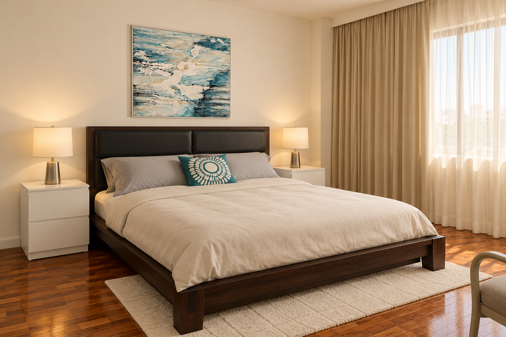

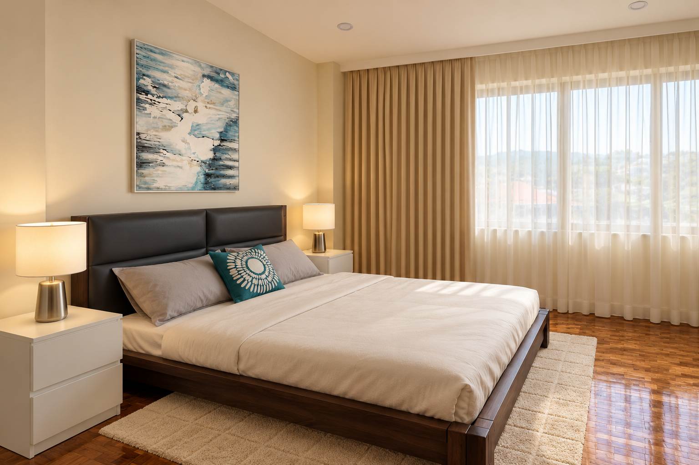

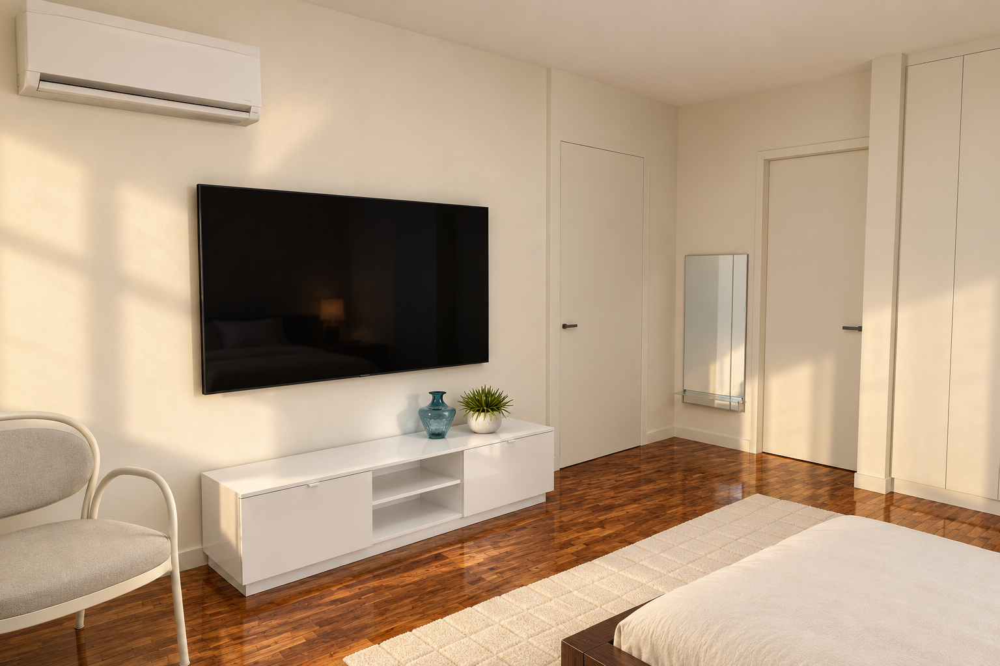
Style renders are AI images (Codex image generation, sketch-to-render) painted over the dimension-led model views below, with the original parquet photo and the supplier product photos as references: a style interpretation of each scheme, not a dimension certification; check every piece against the schedule.

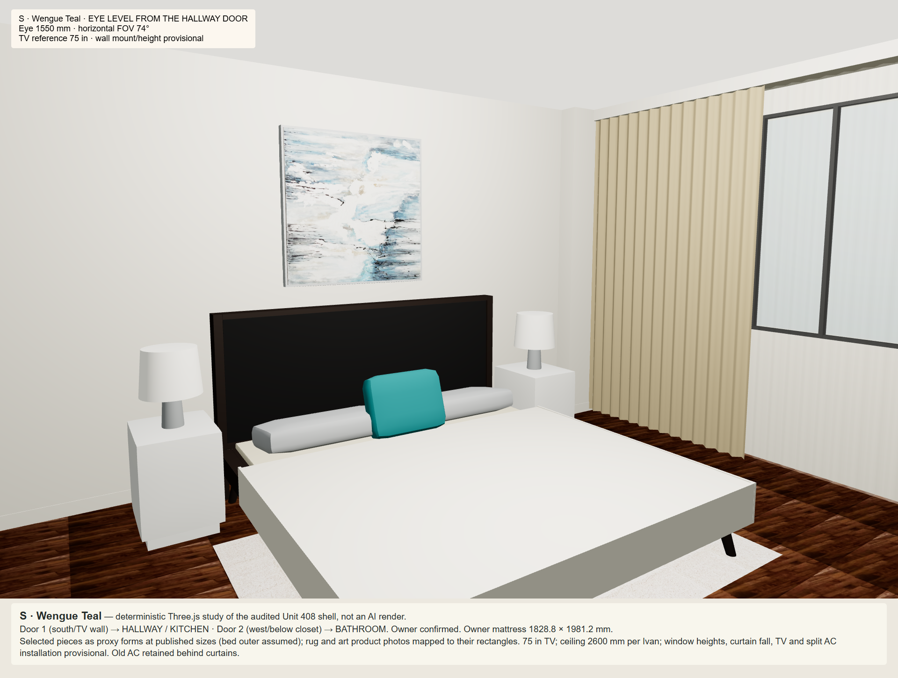

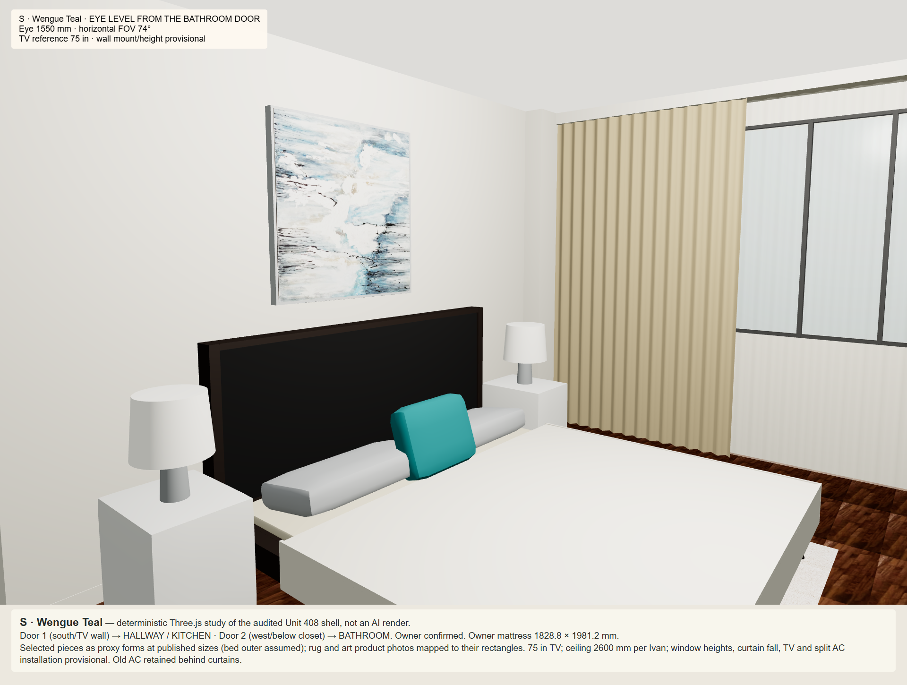

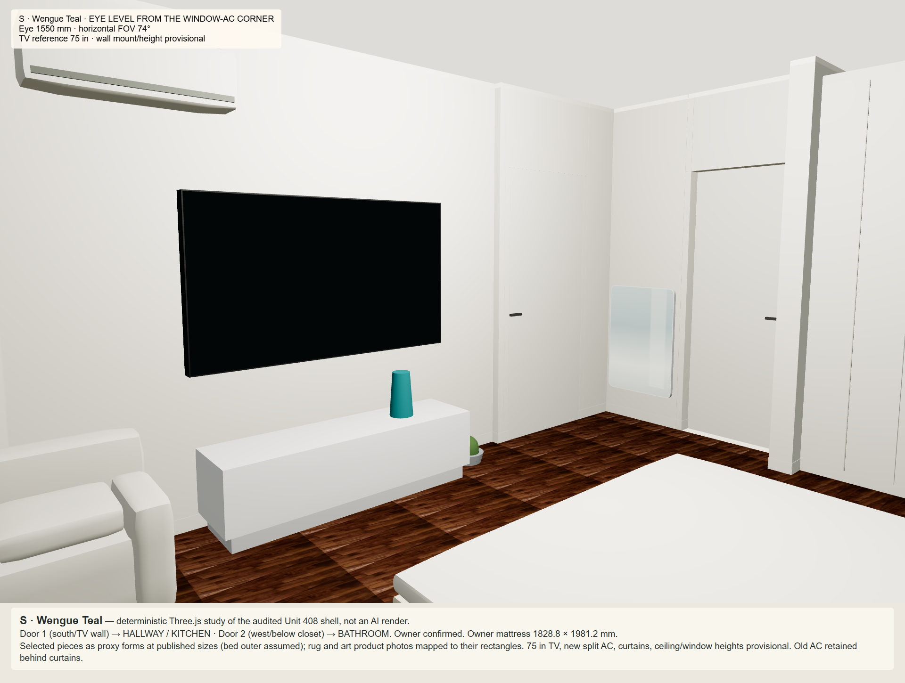
Model views are deterministic Three.js views of the audited Unit 408 shell (parquet, curtains, window, doors, closet, 75 in TV, new split AC) with the selected pieces as proxy forms at published or assumed sizes and the rug and art photos mapped to their rectangles; not AI renders, finishes approximate.
The reference board contains supplier product photographs.

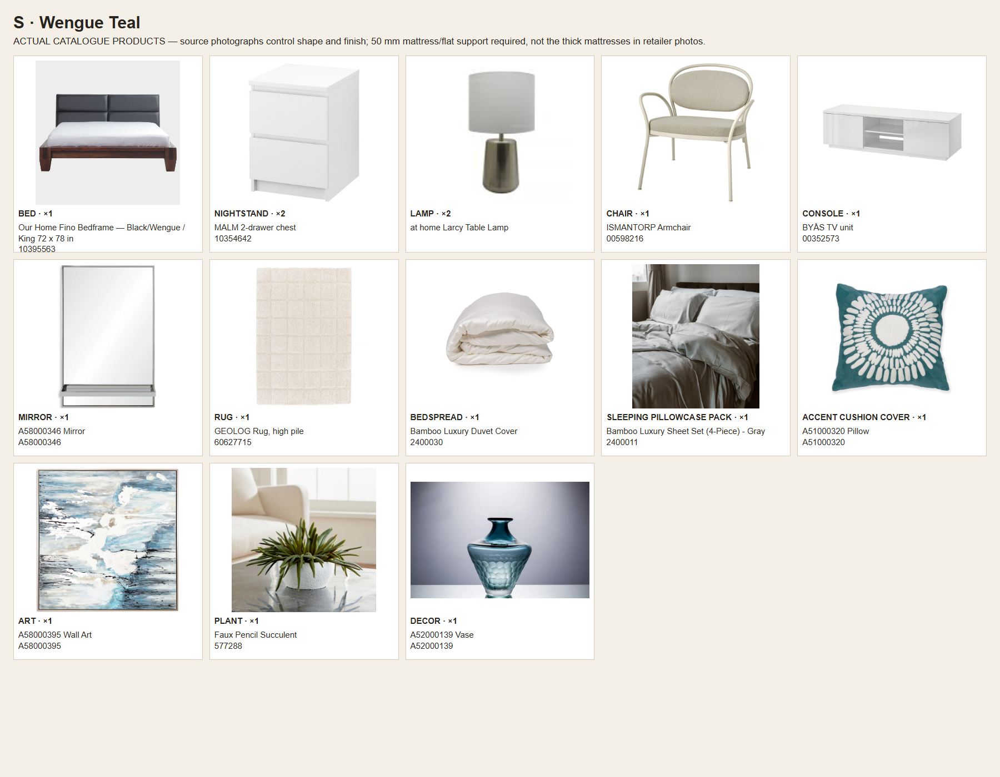

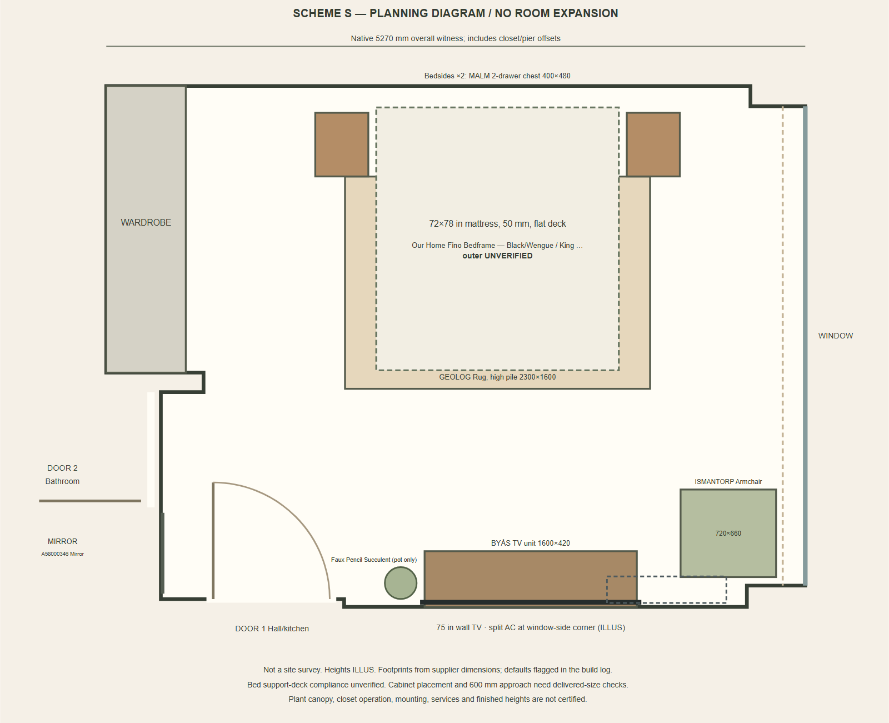
Space & fit
- MALM 400×480 bedsides each side of the Fino King; Fino King outer size unpublished, fit uses an assumed outer.
- BYÅS 1600 mm console is at the ≤1600 mm short-wall limit.
- GEOLOG 160×230 rug under the lower two-thirds of the bed.
Every scheduled itemDirection S · selected pieces13 rows
13 scheduled items
| Starred | Piece & exact variant | Qty / scheme | Unit price | Line price | Source & fulfillment |
|---|---|---|---|---|---|
bedOur Home Fino Bedframe — Black/Wengue / King 72 x 78 inBlack/Wengue / King 72 x 78 in Dimensions & source notesNotes: Solid mahogany frame in a dark wengue stain, black PU four-panel floating headboard, chunky tapered posts, low platform. Support is not published ("industrial gravity fit bedframe") => UNVERIFIED, not ready to order until the deck is confirmed; King outer dimensions unpublished (Queen only on the page). Captured by the GHI set's bed search on 21 Oct 2026 (Shopify collection JSON). Price basis: Our Home Shopify product JSON, King 72×78 variant |
1S | ₱52,155Source price: 2026-10-21 | ₱52,155 | Supplier JSON available=True (read 2026-10-21) | Cebu delivery unconfirmedSupplier page ↗ | |
 nightstandMALM 2-drawer chestMALM 2-drawer chest, white, 40x55 cm; article 10354642 Dimensions & source notesDimensions (mm): width: 400; depth: 480; height: 550 Price basis: Official Philippine product-page price for the complete selected listing/variant; included quantity follows the exact specification variant. Delivery and assembly are additional. |
2S | ₱2,999Source price: 2026-09-10 | ₱5,998 | In stock according to source | Cebu delivery: unconfirmed | price date 2026-09-10 | IKEASupplier page ↗ | |
lampat home Larcy Table LampTable Lamp, Satin Nickel Dimensions & source notesDimensions (mm): width: 325; depth: 325; height: 390 Price basis: Published official category-card online price |
2S | ₱2,999Source price: 2026-09-10 | ₱5,998 | Sold out | Cebu delivery: unconfirmed | price date 2026-09-10 | abensonHOME catalogSupplier page ↗ | |
 chairISMANTORP ArmchairISMANTORP Armchair, metal light grey-beige/Tibbleby light beige; article 00598216 Dimensions & source notesDimensions (mm): width: 720; depth: 660; height: 710 Price basis: Official Philippine product-page price for the complete selected listing/variant; included quantity follows the exact specification variant. Delivery and assembly are additional. |
1S | ₱3,999Source price: 2026-09-10 | ₱3,999 | In stock according to source | Cebu delivery: unconfirmed | price date 2026-09-10 | IKEASupplier page ↗ | |
 consoleBYÅS TV unitTV unit, high gloss white, 160x42x45 cm (63x16 1/2x17 3/4 ") Dimensions & source notesDimensions (mm): width: 1600; depth: 420; height: 450 Price basis: Per listed item/combination for exact article number |
1S | ₱9,999Source price: 2026-09-08 | ₱9,999 | Available for delivery | Cebu delivery: unconfirmed | price date 2026-09-08 | IKEASupplier page ↗ | |
mirrorA58000346 MirrorA58000346 Mirror; manufacturer SKU A58000346; Default Title; Silver Dimensions & source notesDimensions (mm): width: 609.6; depth: 124.968; height: 914.4 Price basis: Per exact listed official Philippine storefront variant; verify quantity/configuration in listing. Cebu branch quotation is not established. |
1S | ₱26,100Source price: 2026-09-10 | ₱26,100 | online_variant_available_cebu_stock_unconfirmed | Cebu delivery: unconfirmed | price date 2026-09-10 | AshleySupplier page ↗ | |
 rugGEOLOG Rug, high pileGEOLOG Rug, high pile, off-white, 160x230 cm; article 60627715 Dimensions & source notesDimensions (mm): width: 1600; depth: 2300 Price basis: Official Philippine product-page price for the complete selected listing/variant; included quantity follows the exact specification variant. Delivery and assembly are additional. |
1S | ₱8,499Source price: 2026-09-10 | ₱8,499 | In stock according to source | Cebu delivery: unconfirmed | price date 2026-09-10 | IKEASupplier page ↗ | |
bedspreadBamboo Luxury Duvet CoverIvory; listed Ivory / Queen, King to confirm Dimensions & source notesPrice basis: Official online store price for this exact variant (products.json variant 44338126422155: price 5250, compare-at none); per listed unit as titled |
1S | ₱5,250Source price: 2026-10-20 | ₱5,250 | online_variant_available_cebu_stock_unconfirmed | Cebu delivery: unconfirmed | price date 2026-10-20 | Linen & HomesSupplier page ↗ | |
sleeping pillowcase packBamboo Luxury Sheet Set (4-Piece) - GrayVariant 'King'; SKU 2400011 Dimensions & source notesPrice basis: Official online store price for this exact variant (products.json variant 39330796896395: price 6950, compare-at none); per listed unit as titled |
1S | ₱6,950Source price: 2026-10-20 | ₱6,950 | online_variant_available_cebu_stock_unconfirmed | Cebu delivery: unconfirmed | price date 2026-10-20 | Linen & HomesSupplier page ↗ | |
accent cushion coverA51000320 PillowA51000320 Pillow; manufacturer SKU A51000320; Default Title; White/Blue Dimensions & source notesDimensions (mm): width: 450.088; depth: 450.088; height: 150.114 Price basis: Per exact listed official Philippine storefront variant; verify quantity/configuration in listing. Cebu branch quotation is not established. |
1S | ₱2,600Source price: 2026-09-10 | ₱2,600 | online_variant_available_cebu_stock_unconfirmed | Cebu delivery: unconfirmed | price date 2026-09-10 | AshleySupplier page ↗ | |
artA58000395 Wall ArtA58000395 Wall Art; manufacturer SKU A58000395; Default Title; Multi Dimensions & source notesDimensions (mm): width: 1016; depth: 50.8; height: 1016 Price basis: Per exact listed official Philippine storefront variant; verify quantity/configuration in listing. Cebu branch quotation is not established. |
1S | ₱15,600Source price: 2026-09-10 | ₱15,600 | online_variant_available_cebu_stock_unconfirmed | Cebu delivery: unconfirmed | price date 2026-09-10 | AshleySupplier page ↗ | |
plantFaux Pencil SucculentFaux Pencil Succulent; Single listed configuration; published SKU 577288; Shopify variant 44463580774616 Dimensions & source notesDimensions (mm): width: 240.03; height: 199.898 Price basis: Per selected Philippine listing configuration; set quantities, covers and inserts follow exact title. Published PHP price excludes unquoted delivery/crating/assembly. |
1S | ₱3,499Source price: 2026-09-10 | ₱3,499 | Online listing available | Cebu delivery: unconfirmed | price date 2026-09-10 | Crate & BarrelSupplier page ↗ | |
decorA52000139 VaseA52000139 Vase; manufacturer SKU A52000139; Default Title; Transparent Blue Dimensions & source notesDimensions (mm): width: 180.34; depth: 647.7; height: 231.14 Price basis: Per exact listed official Philippine storefront variant; verify quantity/configuration in listing. Cebu branch quotation is not established. |
1S | ₱9,600Source price: 2026-09-10 | ₱9,600 | online_variant_available_cebu_stock_unconfirmed | Cebu delivery: unconfirmed | price date 2026-09-10 | AshleySupplier page ↗ |


Direction T
Birch Coral
Pale birch and oak throughout: the spindle-headboard BJÖRKSNÄS bed, Astrid two-drawer bedsides, an Amanda light-oak console and a maple-framed Jea mirror. Coral is the one accent, in a terracotta linen lumbar cushion and the coral half-circle prints over the bed, with the pink JÄRNVÄG rug as its quiet echo. Off-white BLIDVÄDER stoneware lamps, a natural faux-linen comforter, sand sheets and an oak HAY Arbour chair in rose. An olive stem in a whitewashed terracotta vase. Squint phrase: pale birch, coral, ceramic.

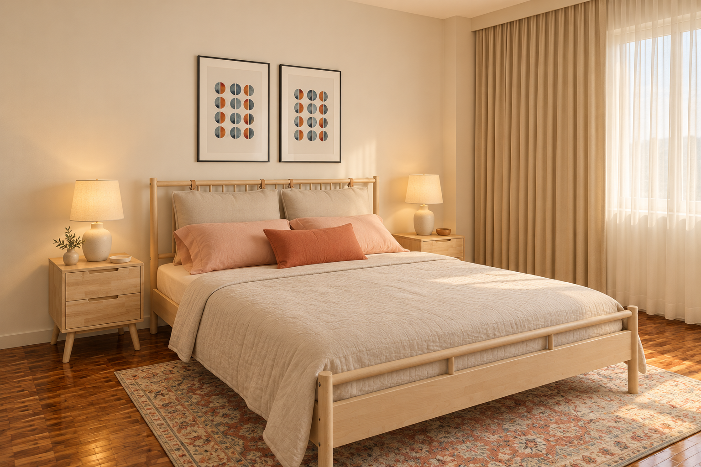

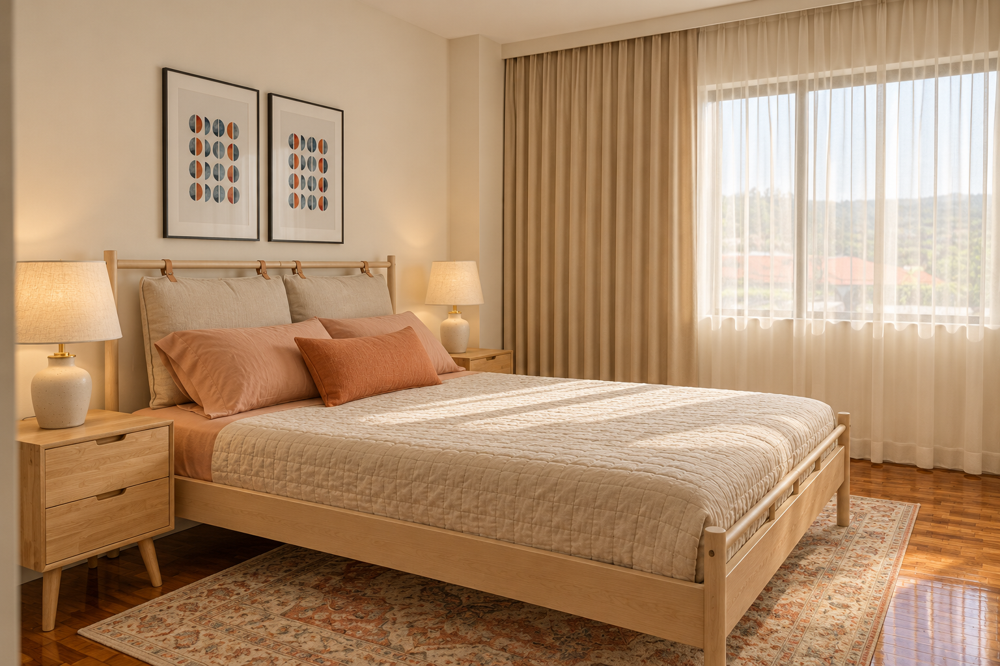

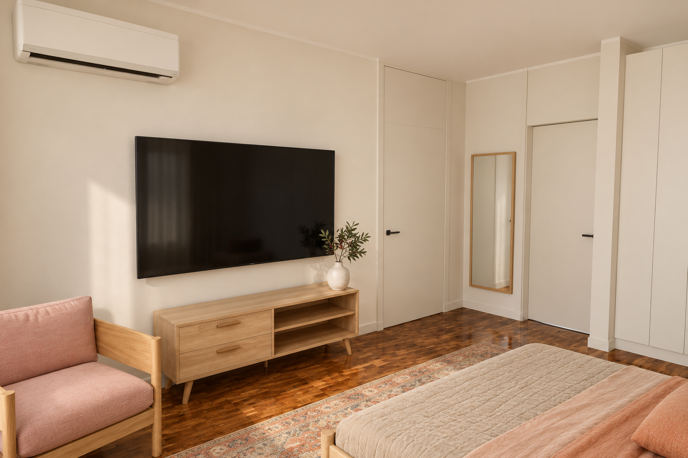
Style renders are AI images (Codex image generation, sketch-to-render) painted over the dimension-led model views below, with the original parquet photo and the supplier product photos as references: a style interpretation of each scheme, not a dimension certification; check every piece against the schedule.

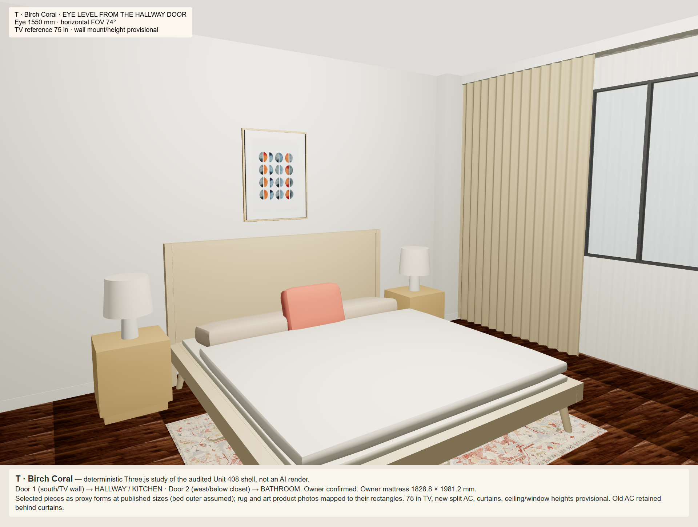

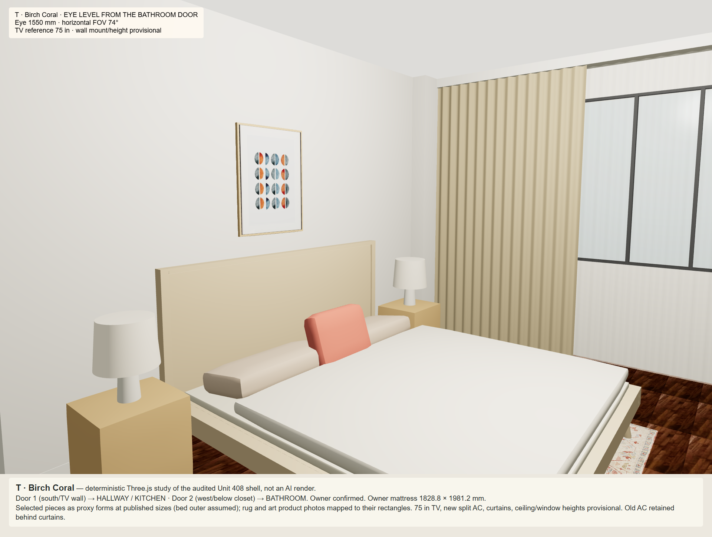

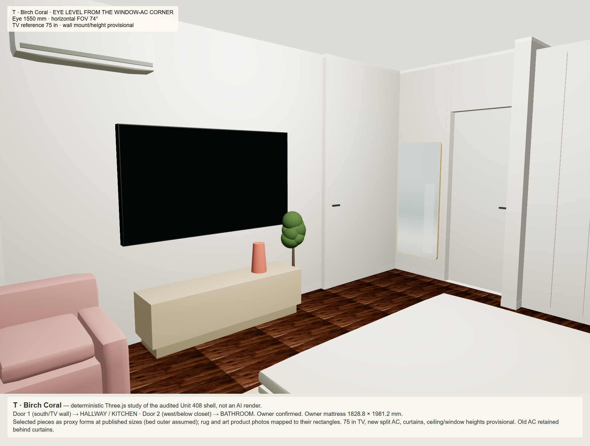
Model views are deterministic Three.js views of the audited Unit 408 shell (parquet, curtains, window, doors, closet, 75 in TV, new split AC) with the selected pieces as proxy forms at published or assumed sizes and the rug and art photos mapped to their rectangles; not AI renders, finishes approximate.
The reference board contains supplier product photographs.

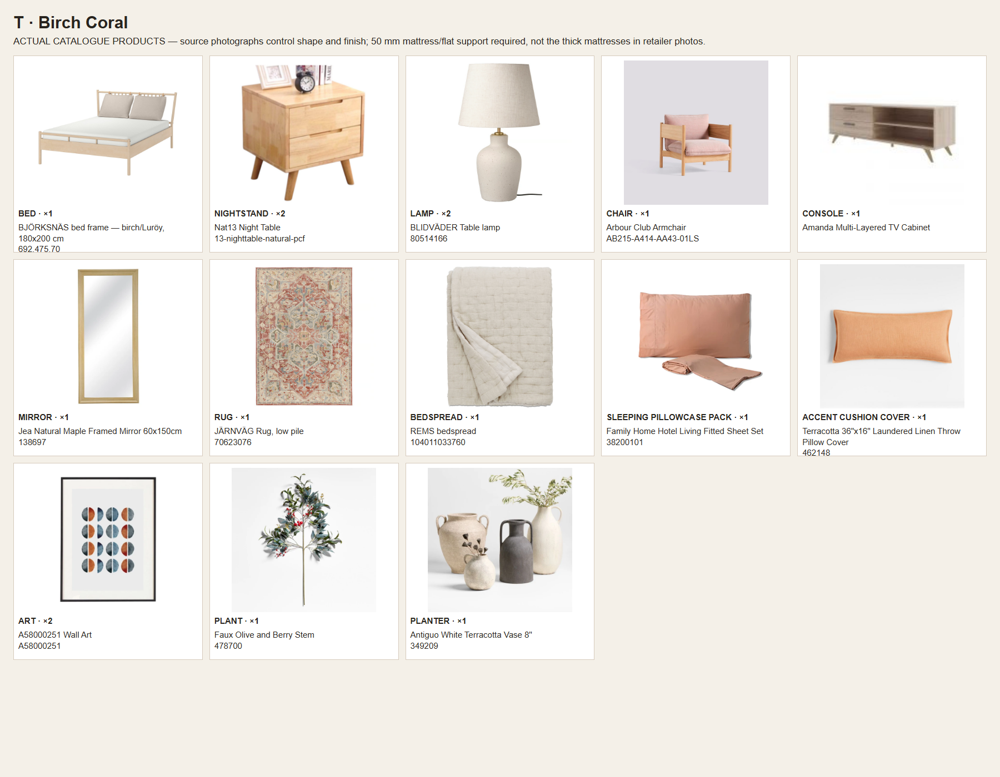

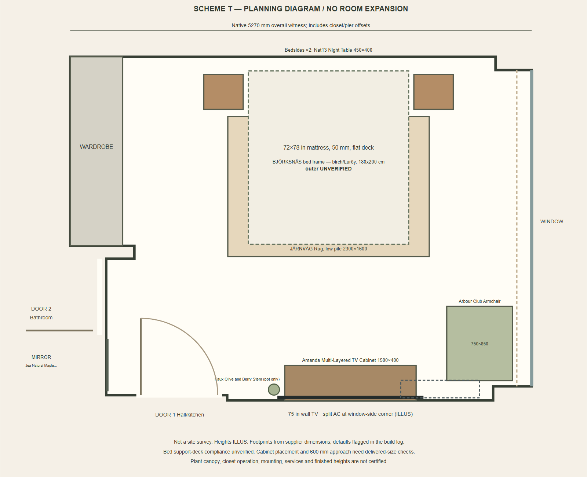
Space & fit
- Astrid 550×420 bedsides are the widest in the set; check the clearance to the window wall.
- Amanda 1500 mm console fits the ≤1600 mm short wall.
- BJÖRKSNÄS is a 180×200 frame: SIZE FLAG against the 1828.8 mm mattress.
Every scheduled itemDirection T · selected pieces13 rows · 1 quote required
13 scheduled items
| Starred | Piece & exact variant | Qty / scheme | Unit price | Line price | Source & fulfillment |
|---|---|---|---|---|---|
bedBJÖRKSNÄS bed frame — birch/Luröy, 180x200 cmbirch/Luröy, 180x200 cm Dimensions & source notesNotes: Natural birch frame, spindle headboard with leather straps holding two beige cushions, round posts. Luröy slats => CONDITIONAL: custom continuous deck required. SIZE FLAG: 1800 mm internal width vs the 1828.8 mm mattress; the deck must sit on the rails or the mattress be re-specced to 1800 mm. Outer dimensions unpublished in the capture. Price basis: IKEA Philippines search API price PHP 30,999 (read 2026-10-21 14:23, research/king-beds) |
1T | ₱30,999Source price: 2026-10-21 | ₱30,999 | IKEA PH search API read 2026-10-21 14:23: HOME_DELIVERY HIGH_IN_STOCK | Cebu delivery unconfirmedSupplier page ↗ | |
nightstandNat13 Night TableSKU 13-nighttable-natural-pcf Dimensions & source notesDimensions (mm): width: 450; depth: 400; height: 500 Notes: Two closed drawers in natural rubberwood on splayed legs (photo). Dimensions unpublished: plans assume 450×400×500 mm; confirm before purchase. Price basis: Published price for the selected listing variant |
2T | ₱3,500Source price: 2026-09-10 | ₱7,000 | In stock according to source | Cebu delivery: unconfirmed | price date 2026-09-10 | Furniture ManilaSupplier page ↗ | |
 lampBLIDVÄDER Table lampBLIDVÄDER Table lamp, off-white ceramic/beige, 50 cm; article 80514166 Dimensions & source notesDimensions (mm): height: 500 Price basis: Official Philippine product-page price for the complete selected listing/variant; included quantity follows the exact specification variant. Delivery and assembly are additional. |
2T | ₱3,499Source price: 2026-09-10 | ₱6,998 | In stock according to source | Cebu delivery: unconfirmed | price date 2026-09-10 | IKEASupplier page ↗ | |
chairArbour Club ArmchairOiled waxed solid oak frame, Atlas 621 upholstery Dimensions & source notesDimensions (mm): width: 750; depth: 850; height: 750 Notes: Oak frame with rose Atlas 621 cushions, the coral-family chair. Frozen catalogue offer carries no price, so the line is QUOTE REQUIRED; fabric colour to confirm against a swatch. Price basis: QUOTE REQUIRED (frozen catalogue offer OFF-DS-CAT-BA0B055E95B342 has no price) |
1T | Quote required | Quote required | QUOTE REQUIRED | PH route: Design Story Philippines (catalogue offer has no price) | Cebu delivery unconfirmedSupplier page ↗ | |
consoleAmanda Multi-Layered TV CabinetFinish as photographed (pale grey-oak); listing text says Cherry. Confirm the finish before purchase. Dimensions & source notesDimensions (mm): width: 1500; depth: 400; height: 450 Price basis: Published official category-card online price |
1T | ₱4,995Source price: 2026-09-10 | ₱4,995 | Sold out | Cebu delivery: unconfirmed | price date 2026-09-10 | abensonHomeSupplier page ↗ | |
mirrorJea Natural Maple Framed Mirror 60x150cmSingle published variant; SKU 138697 Dimensions & source notesDimensions (mm): width: 600; height: 1500 Price basis: Official public catalog price in PHP for the selected exact variant; no member discount inferred. |
1T | ₱2,160Source price: 2026-09-10 | ₱2,160 | Catalog listed | Cebu delivery: unconfirmed | price date 2026-09-10 | Mandaue FoamSupplier page ↗ | |
 rugJÄRNVÄG Rug, low pileJÄRNVÄG Rug, low pile, ornament pattern pink/beige, 160x230 cm; article 70623076 Dimensions & source notesDimensions (mm): width: 1600; depth: 2300 Price basis: Official Philippine product-page price for the complete selected listing/variant; included quantity follows the exact specification variant. Delivery and assembly are additional. |
1T | ₱7,999Source price: 2026-09-10 | ₱7,999 | In stock according to source | Cebu delivery: unconfirmed | price date 2026-09-10 | IKEASupplier page ↗ | |
bedspreadREMS bedspreadREMS bedspread; manufacturer variant/SKU 104011033760; master 104011033760; selected configuration codes: Dimensions & source notesDimensions (mm): width: 2500; depth: 2500 Price basis: Per exact selected configuration; selected public product price.value, not the lower family starting-price field. Displayed selected RRP; no separate positive beforePrice published. |
1T | ₱31,890Source price: 2026-09-10 | ₱31,890 | Catalog listed | Cebu delivery: unconfirmed | price date 2026-09-10 | BoConceptSupplier page ↗ | |
sleeping pillowcase packFamily Home Hotel Living Fitted Sheet SetColour as photographed (peach); listed colours White, Mocha, Sand, Gray. Confirm colour and King SKU; priced on White / Queen SKU 38200101. Dimensions & source notesPrice basis: Official online store price for this exact variant (products.json variant 32571948499023: price 3679.2, compare-at 4599); per listed unit as titled |
1T | ₱3,679.20Source price: 2026-10-20 | ₱3,679.20 | online_variant_available_cebu_stock_unconfirmed | Cebu delivery: unconfirmed | price date 2026-10-20 | Family HomeSupplier page ↗ | |
accent cushion coverTerracotta 36"x16" Laundered Linen Throw Pillow CoverTerracotta 36"x16" Laundered Linen Throw Pillow Cover; Terracotta; published SKU 462148; Shopify variant 43189788016856 Dimensions & source notesPrice basis: Per selected Philippine listing configuration; set quantities, covers and inserts follow exact title. Published PHP price excludes unquoted delivery/crating/assembly. |
1T | ₱1,495Source price: 2026-09-10 | ₱1,495 | Online listing available | Cebu delivery: unconfirmed | price date 2026-09-10 | Crate & BarrelSupplier page ↗ | |
artA58000251 Wall ArtA58000251 Wall Art; manufacturer SKU A58000251; Default Title; Multi Dimensions & source notesDimensions (mm): width: 609.6; depth: 25.4; height: 787.4 Price basis: Per exact listed official Philippine storefront variant; verify quantity/configuration in listing. Cebu branch quotation is not established. |
2T | ₱11,300Source price: 2026-09-10 | ₱22,600 | online_variant_available_cebu_stock_unconfirmed | Cebu delivery: unconfirmed | price date 2026-09-10 | AshleySupplier page ↗ | |
plantFaux Olive and Berry StemFaux Olive and Berry Stem; Single listed configuration; published SKU 478700; Shopify variant 43898183680216 Dimensions & source notesDimensions (mm): width: 127; height: 1016 Price basis: Per selected Philippine listing configuration; set quantities, covers and inserts follow exact title. Published PHP price excludes unquoted delivery/crating/assembly. |
1T | ₱2,299Source price: 2026-09-10 | ₱2,299 | Online listing available | Cebu delivery: unconfirmed | price date 2026-09-10 | Crate & BarrelSupplier page ↗ | |
planterAntiguo White Terracotta Vase 8"Antiguo White Terracotta Vase 8"; Single listed configuration; published SKU 349209; Shopify variant 51611369898200 Dimensions & source notesDimensions (mm): height: 199.898 Notes: The single cream Antiguo vase (the supplier photo shows it in a group of four). Price basis: Per selected Philippine listing configuration; set quantities, covers and inserts follow exact title. Published PHP price excludes unquoted delivery/crating/assembly. |
1T | ₱3,499Source price: 2026-09-10 | ₱3,499 | Online listing available | Cebu delivery: unconfirmed | price date 2026-09-10 | Crate & BarrelSupplier page ↗ |


Direction U
Whitewash Emerald
A whitewashed HEMNES pine bed against black: black faux-leather two-drawer night tables, a JÄTTESTA console, a Porro Neve black ash armchair and a ribbed black arch mirror. Emerald is the accent, in a green Santiago cushion, a fern-green marble tray and the green palm canvas over the bed. Smoked glass gives the light: the Taylow faceted lamps. White quilted coverlet, grey Tencel sheets, a black-and-natural striped Rouen jute rug and a peperomia in a black pot. Squint phrase: whitewash, black, emerald.

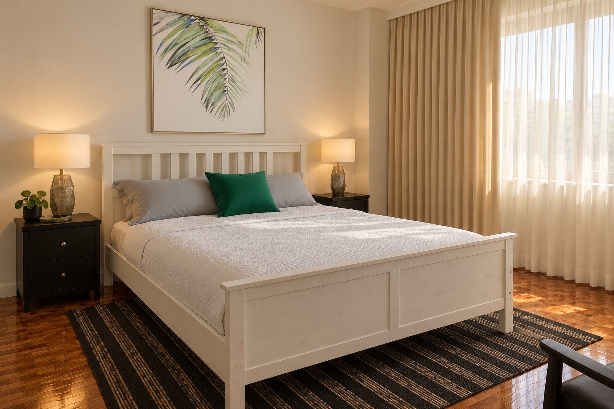

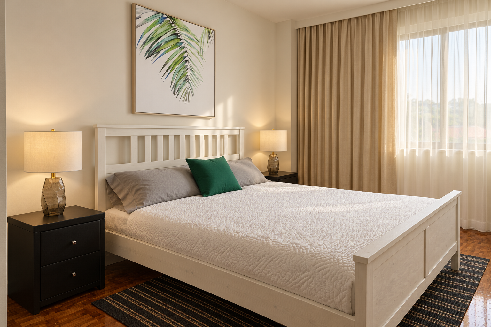

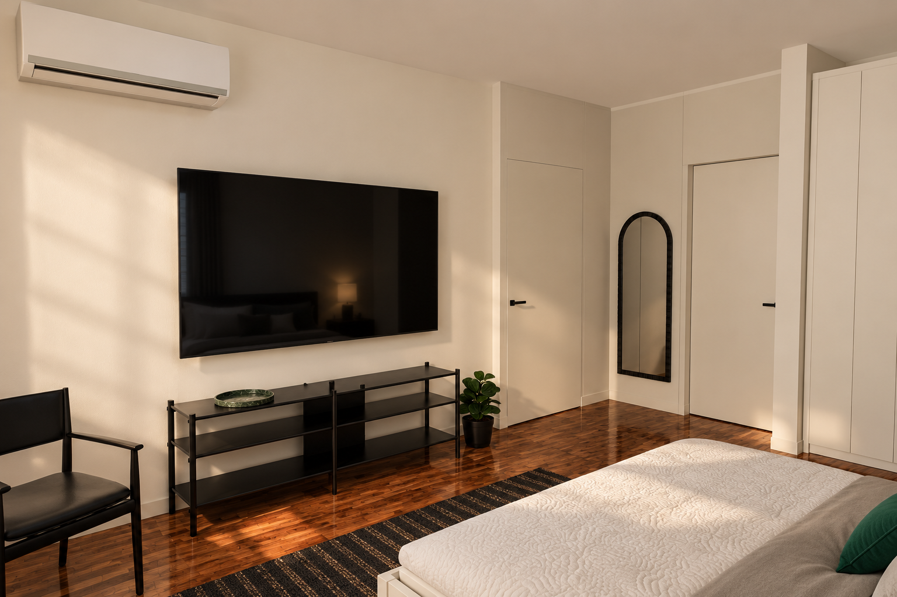
Style renders are AI images (Codex image generation, sketch-to-render) painted over the dimension-led model views below, with the original parquet photo and the supplier product photos as references: a style interpretation of each scheme, not a dimension certification; check every piece against the schedule.

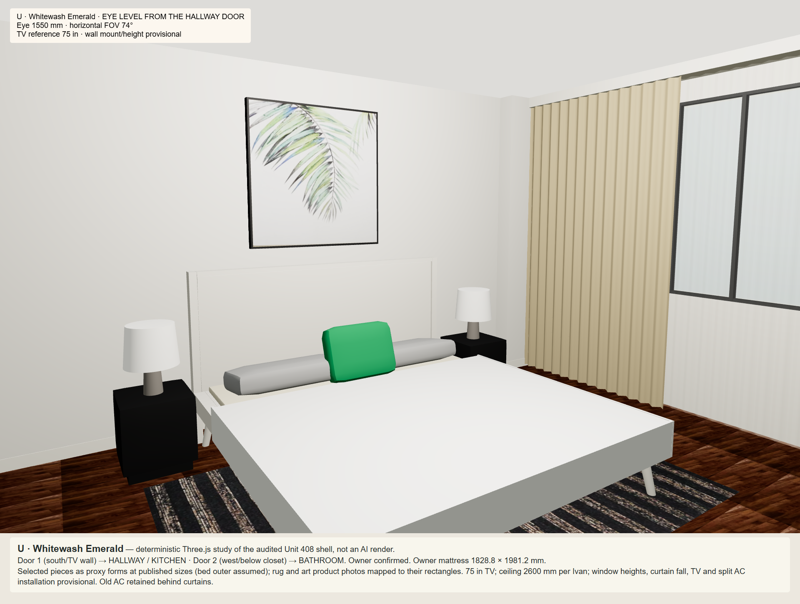

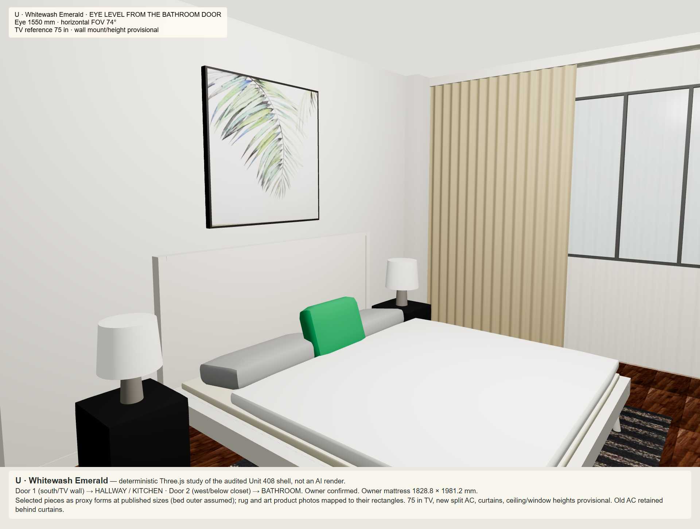

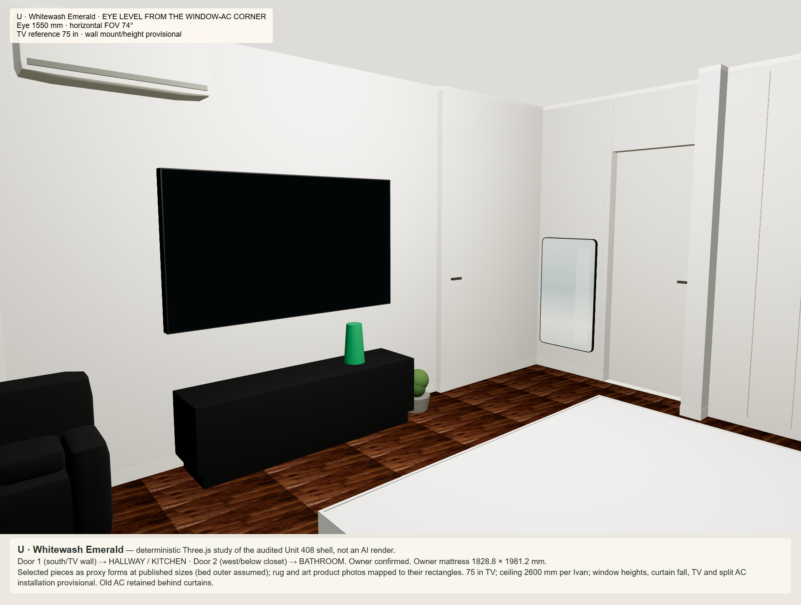
Model views are deterministic Three.js views of the audited Unit 408 shell (parquet, curtains, window, doors, closet, 75 in TV, new split AC) with the selected pieces as proxy forms at published or assumed sizes and the rug and art photos mapped to their rectangles; not AI renders, finishes approximate.
The reference board contains supplier product photographs.

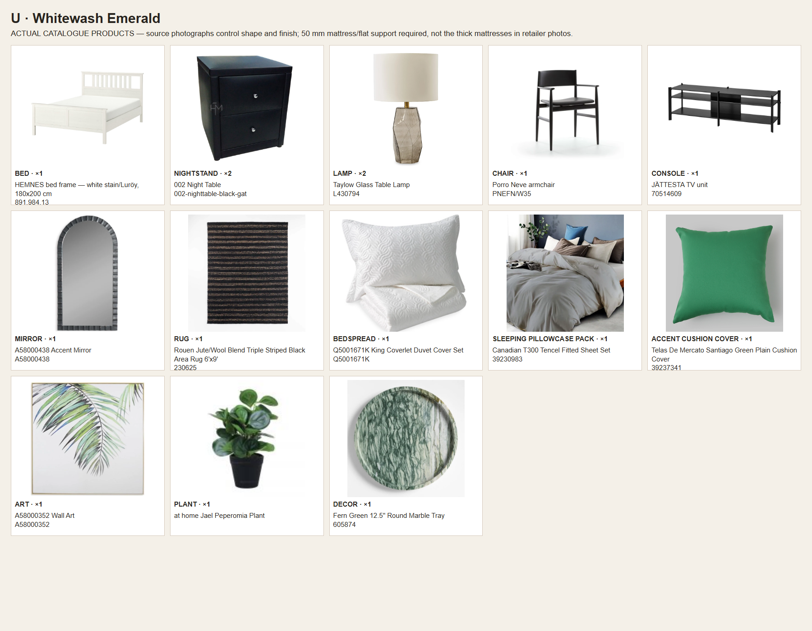

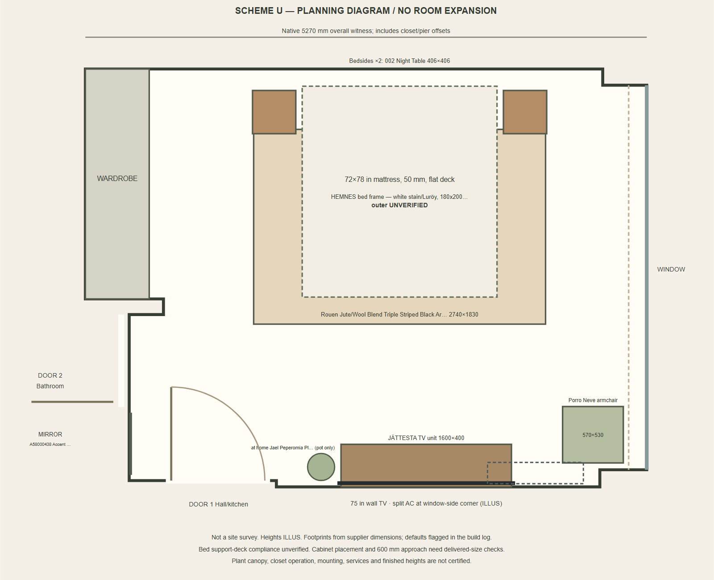
Space & fit
- Furniture Manila 002 night tables are 406×406 mm; lamps sit centred.
- JÄTTESTA 1600 mm console is at the ≤1600 mm short-wall limit.
- Rouen 183×274 rug is the largest in the set; check the door swing and wardrobe clearance.
Every scheduled itemDirection U · selected pieces13 rows
13 scheduled items
| Starred | Piece & exact variant | Qty / scheme | Unit price | Line price | Source & fulfillment |
|---|---|---|---|---|---|
bedHEMNES bed frame — white stain/Luröy, 180x200 cmwhite stain/Luröy, 180x200 cm Dimensions & source notesNotes: Solid pine in a white stain (whitewashed, grain visible), slatted headboard, panelled footboard, square legs. Luröy slats => CONDITIONAL: custom continuous deck required. SIZE FLAG: 1800 mm internal width vs the 1828.8 mm mattress; the deck must sit on the rails or the mattress be re-specced to 1800 mm. Outer dimensions unpublished in the capture. Price basis: IKEA Philippines search API price PHP 20,999 (read 2026-10-21 14:23, research/king-beds) |
1U | ₱20,999Source price: 2026-10-21 | ₱20,999 | IKEA PH search API read 2026-10-21 14:23: HOME_DELIVERY HIGH_IN_STOCK | Cebu delivery unconfirmedSupplier page ↗ | |
nightstand002 Night TableSKU 002-nighttable-black-gat Dimensions & source notesDimensions (mm): width: 406.4; depth: 406.4; height: 457.2 Notes: Black faux-leather two-drawer night table with chrome knobs; both drawers closed (photo). Catalogue closure field unverified. Price basis: Published price for the selected listing variant |
2U | ₱2,650Source price: 2026-09-10 | ₱5,300 | In stock according to source | Cebu delivery: unconfirmed | price date 2026-09-10 | Furniture ManilaSupplier page ↗ | |
lampTaylow Glass Table LampTaylow Glass Table Lamp; manufacturer SKU L430794; Default Title Dimensions & source notesPrice basis: Per exact listed official Philippine storefront variant; verify quantity/configuration in listing. Cebu branch quotation is not established. |
2U | ₱5,500Source price: 2026-09-10 | ₱11,000 | sold_out_online | Cebu delivery: unconfirmed | price date 2026-09-10 | AshleySupplier page ↗ | |
chairPorro Neve armchairPorro Neve armchair / Black Stained Ash; manufacturer SKU PNEFN/W35 Dimensions & source notesDimensions (mm): width: 570; depth: 530; height: 780 Notes: Black-stained ash frame with flat wooden arms and a black seat. Dimensions unpublished in the catalogue: plans assume 570×530×780 mm. Price basis: Per selected official online-store variant: Porro Neve armchair / Black Stained Ash |
1U | ₱39,033.50Source price: 2026-09-10 | ₱39,033.50 | Sold out | Cebu delivery: unconfirmed | price date 2026-09-10 | PorroSupplier page ↗ | |
 consoleJÄTTESTA TV unitTV unit, black, 160x40x49 cm (63x15 3/4x19 1/4 ") Dimensions & source notesDimensions (mm): width: 1600; depth: 400; height: 490 Price basis: Per listed item/combination for exact article number |
1U | ₱7,999Source price: 2026-09-08 | ₱7,999 | Available for delivery | Cebu delivery: unconfirmed | price date 2026-09-08 | IKEASupplier page ↗ | |
mirrorA58000438 Accent MirrorA58000438 Accent Mirror; manufacturer SKU A58000438; Default Title; Black Dimensions & source notesDimensions (mm): width: 584.2; depth: 22.098; height: 1066.8 Price basis: Per exact listed official Philippine storefront variant; verify quantity/configuration in listing. Cebu branch quotation is not established. |
1U | ₱16,800Source price: 2026-09-10 | ₱16,800 | online_variant_available_cebu_stock_unconfirmed | Cebu delivery: unconfirmed | price date 2026-09-10 | AshleySupplier page ↗ | |
rugRouen Jute/Wool Blend Triple Striped Black Area Rug 6'x9'Rouen Jute/Wool Blend Triple Striped Black Area Rug 6'x9'; Single listed configuration; published SKU 230625; Shopify variant 44999344160984 Dimensions & source notesDimensions (mm): width: 1830; depth: 2740 Price basis: Per selected Philippine listing configuration; set quantities, covers and inserts follow exact title. Published PHP price excludes unquoted delivery/crating/assembly. |
1U | ₱35,995Source price: 2026-09-10 | ₱35,995 | Online listing available | Cebu delivery: unconfirmed | price date 2026-09-10 | Crate & BarrelSupplier page ↗ | |
bedspreadQ5001671K King Coverlet Duvet Cover SetQ5001671K King Coverlet Duvet Cover Set; manufacturer SKU Q5001671K; Default Title; White Dimensions & source notesPrice basis: Per exact listed official Philippine storefront variant; verify quantity/configuration in listing. Cebu branch quotation is not established. |
1U | ₱21,800Source price: 2026-09-10 | ₱21,800 | online_variant_available_cebu_stock_unconfirmed | Cebu delivery: unconfirmed | price date 2026-09-10 | AshleySupplier page ↗ | |
sleeping pillowcase packCanadian T300 Tencel Fitted Sheet SetFossil Gray / King (listed Steel Blue / Queen SKU 39230983; Fossil Gray King SKU and price to confirm) Dimensions & source notesPrice basis: Official online store price for this exact variant (products.json variant 43854428668145: price 6399.2, compare-at 7999); per listed unit as titled |
1U | ₱6,399.20Source price: 2026-10-20 | ₱6,399.20 | online_variant_available_cebu_stock_unconfirmed | Cebu delivery: unconfirmed | price date 2026-10-20 | Our Home PhilippinesSupplier page ↗ | |
| 1U | ₱809.10Source price: 2026-09-10 | ₱809.10 | Online listing available | Cebu delivery: unconfirmed | price date 2026-09-10 | Telas de MercatoSupplier page ↗ | ||
artA58000352 Wall ArtA58000352 Wall Art; manufacturer SKU A58000352; Default Title; Multi Dimensions & source notesDimensions (mm): width: 1059.942; depth: 50.038; height: 1059.942 Price basis: Per exact listed official Philippine storefront variant; verify quantity/configuration in listing. Cebu branch quotation is not established. |
1U | ₱32,800Source price: 2026-09-10 | ₱32,800 | online_variant_available_cebu_stock_unconfirmed | Cebu delivery: unconfirmed | price date 2026-09-10 | AshleySupplier page ↗ | |
| 1U | ₱499Source price: 2026-09-10 | ₱499 | Online listing available | Cebu delivery: unconfirmed | price date 2026-09-10 | abensonHOME catalogSupplier page ↗ | ||
decorFern Green 12.5" Round Marble TraySingle listed variant; SKU 605874 Dimensions & source notesDimensions (mm): width: 317.5; depth: 317.5; height: 25.4 Price basis: Official online store price for this exact variant (products.json variant 50721025622232: price 7999, compare-at 7999); per listed unit as titled |
1U | ₱7,999Source price: 2026-10-20 | ₱7,999 | online_variant_available_cebu_stock_unconfirmed | Cebu delivery: unconfirmed | price date 2026-10-20 | Crate & BarrelSupplier page ↗ |


Your shortlist
Starred pieces
Star ☆ any piece in the schedules above and it is listed here by direction with a running total. Stars are saved in this browser only. Use Copy link to send them to someone else (the link opens with the same stars) or Copy as text for a message.
No starred pieces yet.
Plain-text list
Compare the complete plan
Budgets, with the open costs visible
Quoted work and fulfillment remain unresolved. The planning ranges include the allowances below, plus 10% contingency, rounded up to ₱1,000.
| Per chosen scheme | SWengue Teal | TBirch Coral | UWhitewash Emerald |
|---|---|---|---|
| Selected design pieces | ₱156,247 | ₱125,613.20 | ₱207,432.80 |
| Common essentials & room treatments | ₱127,919.50 | ₱119,924.50 | ₱119,924.50 |
| Priced schedule subtotal | ₱284,166.50 | ₱245,537.70 | ₱327,357.30 |
| Working planning range | ₱352,000 to ₱405,000 | ₱309,000 to ₱363,000 | ₱399,000 to ₱453,000 |
Planning allowances ₱35,000–₱84,000 before contingency
| Work or provision | Low | High | Basis & limits |
|---|---|---|---|
| Cebu freight,delivery and handling | ₱5,000 | ₱15,000 | Planning allowance only; no shipping rates/address allocation obtained. Overseas freight not included. |
| Split-AC installation and normal pipe/electrical provision | ₱10,000 | ₱20,000 | Planning allowance only; actual pipe length,capacity,condensate path,condenser mounting and building permissions unmeasured. |
| TV/mirror/art/ceiling fixture installation and assembly | ₱5,000 | ₱10,000 | Planning allowance only; installer must specify anchors and verify substrate. Includes no structural rebuilding. |
| Paint touch-up and site coordination | ₱5,000 | ₱12,000 | Estimator reserve, not a contractor quote. Optional curtain LED is not selected, displayed or included as a retail item. |
| REQUIRED: custom50mm mattress,72×78in | ₱4,000 | ₱12,000 | Provisional reserve only,not a manufacturer price. Exact finished50mm thickness,cover and foam specification need supplier acceptance and quotation. Replaces rejected8in mattress; not added on top of it. |
| REQUIRED unless existing deck proven compliant: custom continuous flat support | ₱6,000 | ₱15,000 | Provisional reserve only,not a contractor quote. All current bed supports unverified. Must resolve structure,bearing,fixings,recess/rail height and bed warranty. No exposed slats accepted. |
Shared foundations
Common essentials & fixed room treatments
The fixed curtains and listed technical essentials are common room provisions. Scheme letters show where each row applies; quantities are per chosen scheme.
Every scheduled itemCommon room schedule14 rows · 2 quote required
14 scheduled items
| Starred | Piece & exact variant | Qty / scheme | Unit price | Line price | Source & fulfillment |
|---|---|---|---|---|---|
bedding insertHypoallergenic Lightweight King Duvet InsertSingle listed variant; SKU 448389 Dimensions & source notesNotes: King duvet insert for the S duvet cover (hidden). T uses a filled comforter and U a coverlet set, so neither needs one. Price basis: Official online store price for this exact variant (products.json variant 42852610801880: price 7995, compare-at 19999); per listed unit as titled |
1S | ₱7,995Source price: 2026-10-20 | ₱7,995 | online_variant_available_cebu_stock_unconfirmed | Cebu delivery: unconfirmed | price date 2026-10-20 | Crate & BarrelSupplier page ↗ | |
 technical75-inch Crystal UHD TV UA75U8520HGXXP10179413 Dimensions & source notesNotes: TV is wall mounted; feet not used; published VESA400x300,21.6kg without stand. |
1S/T/U | ₱51,990 | ₱51,990 | Live retailer available=true; Cebu branch allocation unconfirmedSupplier page ↗ | |
 technicalTCL 1.5 HP split inverter TAC-13CSD/KEI210177771 Dimensions & source notesNotes: Equipment-only reference. 1.5HP is a budget candidate, not a heat-load approval; installer must confirm capacity, piping, drainage, condenser location and corner clearances. |
1S/T/U | ₱19,631.50 | ₱19,631.50 | Live retailer available=true; Cebu branch allocation unconfirmedSupplier page ↗ | |
technicalTrue Vision extra-large TV wall mount TV73-69F, 60–120 in, 120 kg, VESA 400×300 listedTV73-69F (manufacturer product 5959) Dimensions & source notesNotes: Replaces the unavailable Westinghouse reference. Published 35×1005×625 mm; installer to confirm substrate, anchors, Samsung screw/spacer lengths and rear connector access. Price basis: Manufacturer current Store API price 2,990 (sale price not applied) |
1S/T/U | ₱2,990Source price: 2026-10-20 | ₱2,990 | Manufacturer store API is_in_stock:true, is_purchasable:true (technical research 20 Oct 2026) | Cebu delivery not checkedSupplier page ↗ | |
technicalMaster bedroom drapes + sheers,2 tracks,inverted pleats16 Oct2026 supplier quotation Dimensions & source notesNotes: Quoted master-bedroom discounted row. Davies Beige+voile remain owner selected, but this quote does not name exact fabric SKU; no claim of verified fabric match. Install/travel terms need reconfirmation. |
1S/T/U | ₱36,720 | ₱36,720 | DATED QUOTE - fabric identity and current scope require reconfirmationSupplier quote pending | |
technicalFinished valance/pelmet:1 of6 quoted areas22800/6 allocation Dimensions & source notesNotes: Equal allocation of quoted whole-apartment valance total22800 across6 areas. Not an independently quoted per-room price. |
1S/T/U | ₱3,800 | ₱3,800 | PLANNING ALLOCATION - supplier has not separately quoted this roomSupplier quote pending | |
technicalFour curtain pull sticks:1 of6 quoted areas11400/6 allocation Dimensions & source notesNotes: Quoted whole-apartment24sticks total11400; allocate4sticks1900. Confirm length/quantity and no-cord operation. |
1S/T/U | ₱1,900 | ₱1,900 | PLANNING ALLOCATION - supplier has not separately quoted this roomSupplier quote pending | |
 technicalDVALA flat sheet, white806.211.71 Dimensions & source notesNotes: Neatly wrap50mm mattress; not an elastic fitted-sheet claim.2400×2600 less1828.8×1981.2 leaves285.6mm per side and309.4mm per end before50mm depth; ample proposed tuck. Catalogue says63–71in beds; this is a proposed thin-mattress flat wrap, verify onsite. No thick mattress/duvet inferred. |
1S/T/U | ₱699 | ₱699 | https://schema.org/InStoreOnly; Cebu allocation unconfirmedSupplier page ↗ | |
 technicalLAPPTATEL pillow, side/back sleeper604.603.72 Dimensions & source notesNotes: 2individual50×80cm sleeping pillow inserts per scheme; no health or comfort certification. |
2S/T/U | ₱399 | ₱798 | https://schema.org/InStock; Cebu allocation unconfirmedSupplier page ↗ | |
 technicalSTOPP FILT anti-slip rug underlay301.830.84 Dimensions & source notesNotes: Two 165×235 cm sheets per rug, cut flat beneath the 160×230 cm rug (S, T) or combined beneath the 183×274 cm rug (U). |
2S/T/U | ₱499 | ₱998 | https://schema.org/InStoreOnly; Cebu allocation unconfirmedSupplier page ↗ | |
 technicalINNER cushion insert, white402.621.94 Dimensions & source notesNotes: One INNER 50×50 cm insert for the scheme cushion cover (S, T and U each have one cover). |
1S/T/U | ₱200 | ₱200 | https://schema.org/InStock; Cebu allocation unconfirmedSupplier page ↗ | |
 technicalSOLHETTA E27 opal LED bulb 470 lm, 2-piece pack105.914.84 Dimensions & source notesNotes: Two 2-packs per scheme for the bedside pair plus spare. Socket types for Larcy (S), BLIDVÄDER (T) and Taylow (U) are not all published; confirm E27 before purchase. |
2S/T/U | ₱99 | ₱198 | https://schema.org/InStoreOnly; Cebu allocation unconfirmedSupplier page ↗ | |
technicalMade-to-order mattress, finished 50 mm × 1828.8 × 1981.2 mmExact specification requires supplier acceptance Dimensions & source notesNotes: Real MTO service, not a verified off-the-shelf 50mm model. Reserve ₱4,000–12,000 below; never treat as free. |
1S/T/U | Quote required | Quote required | QUOTE REQUIRED; exact finished thickness not yet acceptedSupplier page ↗ | |
technicalContinuous flat bed support and any frame adaptationBed-specific engineered specification required Dimensions & source notesNotes: No slats or gaps at contact surface. Confirm load, bearing, fixings, seams, recess/rail height, finished mattress exposure, moisture requirements and warranty. Reserve ₱6,000–15,000 below. |
1S/T/U | Quote required | Quote required | QUOTE REQUIRED; all three frames conditionalSupplier quote pending |


Before ordering
Resolve these procurement gates
- No scheme is purchase-ready until the bed supplier accepts the exact 50 mm mattress on a continuous flat deck. Fino (S) support is unpublished; BJÖRKSNÄS (T) and HEMNES (U) ship with Luröy slats and are 180×200 cm frames against the 1828.8 mm mattress (SIZE FLAG). King outer sizes are unpublished for all three beds (plans use assumed outers).
- Prices are frozen catalogue references (live-Airtable snapshot 20 Oct 2026) with each line's own price date; beds were read from supplier JSON or the IKEA PH search API on 21 Oct 2026. Product existence and photos are verified; exact Cebu stock, address delivery and checkout totals are not.
- Colour, variant and size gates: Bamboo Luxury duvet cover Ivory is a Queen listing (King to confirm); Family Home Hotel Living sheets are rendered peach as photographed but listed White, Mocha, Sand and Gray (priced on White / Queen; colour and King SKU to confirm); Canadian T300 Fossil Gray King SKU and price to confirm; Amanda TV cabinet finish as photographed (pale grey-oak; the listing says Cherry) to confirm; HAY Arbour Club price and fabric to quote; Taylow lamp dimensions unpublished; Nat13 (450×400×500) and Porro Neve (570×530×780) dimensions are plan assumptions; every duvet cover and insert in King.
- TV mount is the True Vision TV73-69F; installer to confirm substrate, anchors and Samsung fixings.
- Curtain ₱42,420 is the carried 16 October quote reference: ₱36,720 master treatment plus ₱3,800 valance and ₱1,900 sticks allocations. Remeasurement quote required.
- Trade/freight/mattress/deck reserves total ₱35,000–84,000 as estimator allowances, not supplier quotations. 10 % contingency added, totals rounded up to the next ₱1,000.
Source notes
- Catalogue of record: frozen live-Airtable snapshot of 20 Oct 2026 (tmp/408-bedroom-fresh-live-airtable-2026-10-20). No Airtable writes.
- 39 visible selections across S/T/U, each with a supplier photo copied into dist/assets/products; models and families were checked against the earlier schemes and the GHI, JKL and MNO claims (UNIQUENESS-MATRIX.md).
- Product photos are unaltered retailer references. Plans use published dimensions where available and flag defaults where not.
- PH retailer routes establish real-product sourcing. Cebu fulfilment requires checkout/branch confirmation; no supplier contact or order has been made.